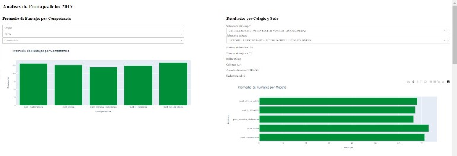

Predictor of Icfes Grades Results and Analytics with an interactive dashboard.

Tools and Technologies used
- AWS Glue and AWS Athena: These services were employed for the extraction and transformation of a large dataset from the open data portal. AWS Glue was used for data cataloging and ETL processes, while Athena facilitated querying the dataset to extract a relevant subset of at least 100,000 records for the analysis.
- Python: Utilized extensively for data cleaning, analysis, and model development. Libraries such as pandas and scikit-learn were used for data manipulation and preliminary analysis.
- Dash: Used to create an interactive dashboard that allows users to input data and visualize the results of the predictive models. Dash provided the framework for developing a user-friendly interface with relevant visualizations.
- AWS EC2 and RDS: EC2 instances hosted the Dash application and handled the computational needs of the project. RDS was used to store the cleaned and processed dataset, enabling secure and scalable database management.
- Keras: Employed for building and serializing the neural network model.
- MLflow: Implemented for tracking experiments, logging model parameters, and visualizing the results of different model configurations, which was crucial for documenting and comparing the performance of various machine learning models.
- Docker: Employed for containerization, ensuring consistent environments for development and deployment. Docker facilitated the management of dependencies and the deployment of the Dash application in a reproducible manner.
- .env File: To securely manage environment variables such as database credentials and API keys, ensuring these sensitive details were not hard-coded in the source code.
Introduction to ICFES Saber 11 Tests
The ICFES Saber 11 tests are part of a series of standardized assessments administered in Colombia to evaluate academic performance across different educational levels. These tests are a crucial part of the educational system in Colombia, serving as a key metric for evaluating student performance and readiness for higher education. The results are used by universities for admissions and by policymakers to assess and improve the quality of education.
The ICFES Saber 11 tests comprise several sections: Critical Reading, which measures the ability to understand, interpret, and analyze written texts; Mathematics, which assesses mathematical reasoning and problem-solving skills; Social Sciences, which evaluates knowledge and understanding of social, historical, and cultural contexts; Natural Sciences, which tests the understanding of scientific concepts and the ability to apply scientific reasoning; and English, which assesses proficiency in the English language, including reading comprehension and usage.
Objective
The primary objective of this project was to develop an analytics product focused on the results of the Saber 11 tests in Colombia. The product was tailored for principals and administrators of public and private schools interested in understanding the factors affecting student performance in the Saber 11 tests. This product aimed to provide insights into the factors influencing student performance and offer comparative analysis tools to improve educational strategies.
Business Questions
- What are the main individual factors affecting student academic performance in the Saber 11 tests?
- How do socioeconomic and demographic factors play a significant role in the Saber 11 test results?
Action Plan
-For the exploratory analysis, various influential factors were categorized and analyzed. Initially focusing on institutional factors, followed by socioeconomic characterization, and finally examining the determinants of test scores.
-Five neural network models were trained to predict scores in different academic competencies (English, Mathematics, Social Sciences, Natural Sciences, Critical Reading). Each neural network was configured with a single numerical output corresponding to one of the academic competencies.
Data
- For this project I used social, personal, and school data of students from the national public data page of Colombia. The dataset included more than 7 million records with 30 explanatory variables.
ETL Process
The dataset was initially stored in an S3 bucket. AWS Glue was used to extract, clean, and transform the data, which was then sent to AWS Athena for further filtering. Using SQL, the data was filtered to include only schools in Bogotá for the periods 20191 and 20192.
The cleaned data was then downloaded as a DataFrame in a .py file for analysis. This process ensured efficient access and usability of the data for the project.
Data Cleaning and Preparation
The data cleaning process involved several steps to ensure the dataset was ready for analysis. First, the CSV file was read into a pandas DataFrame and the column names were converted to lowercase for consistency. Next, rows with any null values were removed, and specific columns that were deemed unnecessary for the analysis, such as 'estu_tipodocumento', 'estu_consecutivo', and others, were dropped. The relevant columns containing scores were converted to numeric types to facilitate mathematical operations. The birth dates of the students were converted to datetime format, and the age of each student was calculated based on a reference year of 2019. Finally, the original birth date column was dropped, resulting in a clean and structured dataset ready for further analysis.
Exploratory Data Analysis
The focus city for this study was Bogotá, chosen for its diverse population. Key findings include that only 0.16% of schools in the sample were bilingual, which is critical for global citizenship education. Socioeconomically, 89% of the population was from strata 1, 2, and 3.
The first graph shows a population survey on the availability of essential resources: car, computer, and internet access. It reveals that a significant portion of the population lacks these resources, which could impact their educational performance.
The second graph presents the segmentation of the population by socioeconomic strata. It illustrates that the majority of students belong to strata 2 and 3, accounting for 41.8% and 37% of the population, respectively.

The bar chart displays the average scores for each academic competency: Mathematics, English, Social Sciences, Natural Sciences, and Critical Reading. Critical Reading had the highest average score, while Social Sciences had the lowest.
The highest average score (56.3) and Social Sciences the lowest (51.1). These analyses were deepened by mixing several factors and visualizing their relationships.
Neural Network Model
Hyperparameter Selection with bibliography
Activation Function
ReLU was selected for all layers except the output due to its effectiveness and wide acceptance in deep neural network training. For the output layer, the softplus function was used due to its ability to handle positive outputs, which was suitable for our regression tasks (Wiemann et al., 2023).
Loss Function
Mean Squared Error (MSE) was used as the loss function because it heavily penalizes large errors, encouraging the model to minimize significant discrepancies. Mean Absolute Error (MAE) was used as a metric for its intuitive interpretation of average error magnitude (Brownlee, 2020).
Optimizer
Adam was chosen for its efficiency and effectiveness, combining the advantages of stochastic gradient descent and adaptive moment estimation (Doshi, 2019).
Doshi (2019) https://towardsdatascience.com/ optimizers-for-training-neural-network-59450d71caf6.
Hyperparameter Selection with iteration
Data was split into 30% for testing, 21% for validation, and the remainder for training. The training set was used to fit model parameters, the validation set for hyperparameter tuning and performance evaluation, and the test set for final model evaluation.Also, the model was trained through 100 epochs.
Through iterative evaluation, the optimal configuration for predicting English scores was determined to be one hidden layer with 500 neurons. The model achieved an MSE of 82.65 and MAE of 6.99 after 100 epochs. Regularization techniques and dropout were implemented to mitigate overfitting, reducing epochs from 100 to 20 and achieving stable performance.

This process was replicated with the others categories. The results were the follow:
Mathematics: One layer with 500 neurons, MAE of 6.9985, MSE of 80.4204 after 24 epochs.
Social Sciences: One layer with 200 neurons, MAE of 7.6546, MSE of 94.687 after 25 epochs.
Natural Sciences: One layer with 200 neurons, MAE of 6.4281, MSE of 66.8379 after 20 epochs.
Critical Reading: One layer with 500 neurons, MAE of 6.5301, MSE of 69.1332 after 20 epochs.
Results:
The model evaluation highlights several key insights. The lowest Mean Absolute Error (MAE), indicating the smallest magnitude of absolute error, was observed in Natural Sciences with a value of 6.4281, followed by Critical Reading (6.5301) and Mathematics (6.9985). Similarly, the lowest Mean Squared Error (MSE), indicating the least variability of error, was also found in Natural Sciences with a value of 66.8379, followed by Critical Reading (69.1332) and Mathematics (80.4204).
The models with more neurons (500) demonstrated faster convergence during training (requiring fewer epochs) and generally provided better results. This suggests that using models with more neurons could be beneficial and warrants further exploration in future models.
Deployment Process
The model was deployed using an EC2 instance running Ubuntu. To manage and monitor the machine learning model, MLflow was utilized, enabling efficient tracking and versioning of the model. Docker was used for containerization, ensuring consistent and isolated environments for the deployment. The interactive Dash application was hosted on the EC2 instance, providing a public-facing interface for users to interact with the data and model predictions.
User Interface
In the Results by School and Campus section, users can select the school and specific campus they are interested in. Once a selection is made, the interface displays detailed information about the selected school, including the number of male and female students, whether the school is bilingual, its calendar type, area of location (urban or rural), and whether it is the main campus. Additionally, a bar chart presents the average scores for each subject (Mathematics, English, Social Sciences, Natural Sciences, and Critical Reading) for the selected school and campus. This allows users to easily compare performance metrics across different subjects and campuses.
The Average Scores by Subject section allows users to filter data by subject and specific socio-economic categories. This section displays average scores for the selected subject based on various socio-economic factors, such as having internet access, owning a car, having a computer, the number of people in the household, and the parent's education level. The interface uses gauge charts to show the average scores for different socio-economic categories, providing a clear comparison between groups (e.g., students with internet access versus those without).